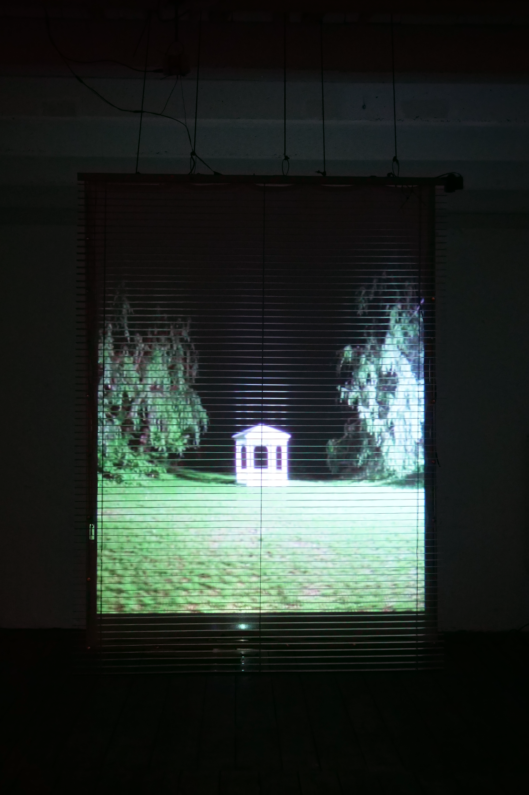
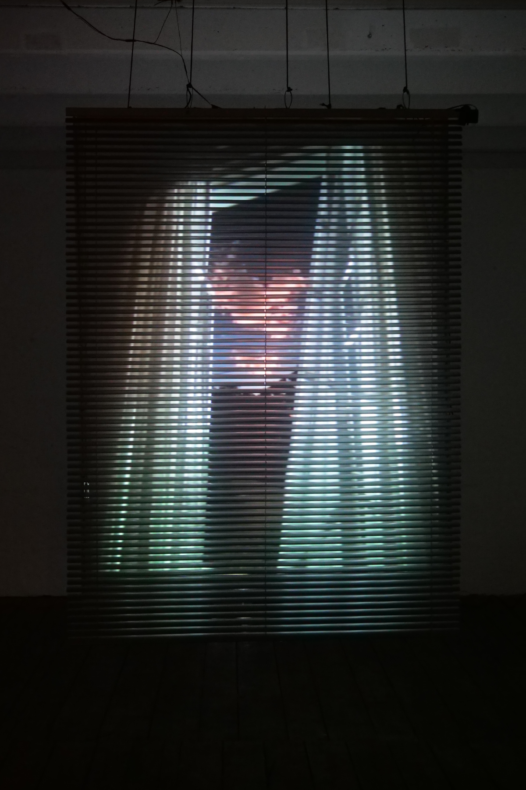
Intervals of Awareness is an interactive installation that explores how inner potential energy becomes perceived and revealed through consciousness.
Concept / Interaction Design / Data Mapping / Video Direction / Installation
Interactive Installation / AI-generated Video / Mood Data / Sensor-based System
Arduino / TouchDesigner / Presence Sensor / Servo Motor / AI Image Generation
The work began with the question: why do we feel full of energy at certain moments, and completely lethargic at others? Rather than creating new possibilities, the project investigates how we become aware of the potential that already exists within us.
Drawing from the relationship between potentiality and actuality, the installation spatially interprets the flow of energy and consciousness through the metaphor of opening and closing.
When no audience member is present, the blind remains closed and the video stops. When someone approaches, a presence sensor is activated, the blind opens, and the video begins to play.
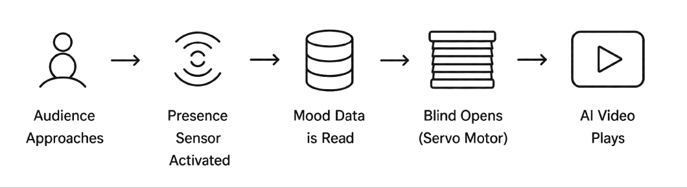
The blind functions as a physical interface, representing the opening and closing of inner awareness. Audience presence, recorded mood data, and video playback are connected through a sensor-based system.
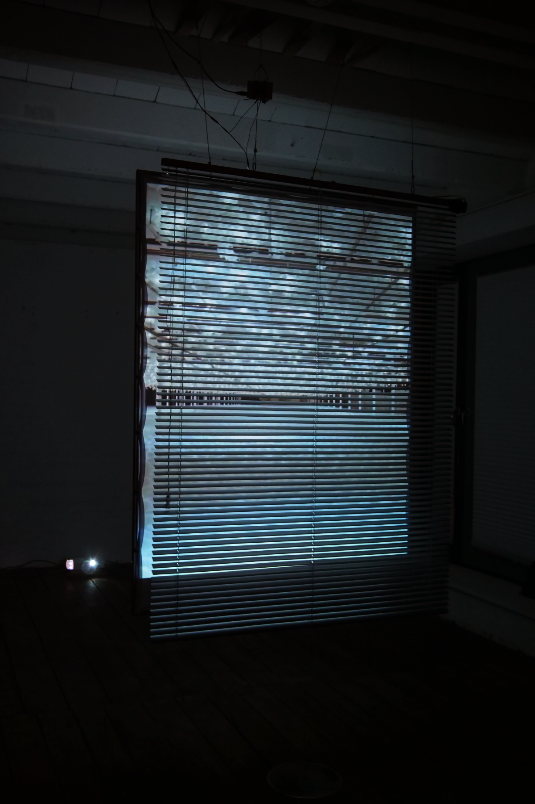
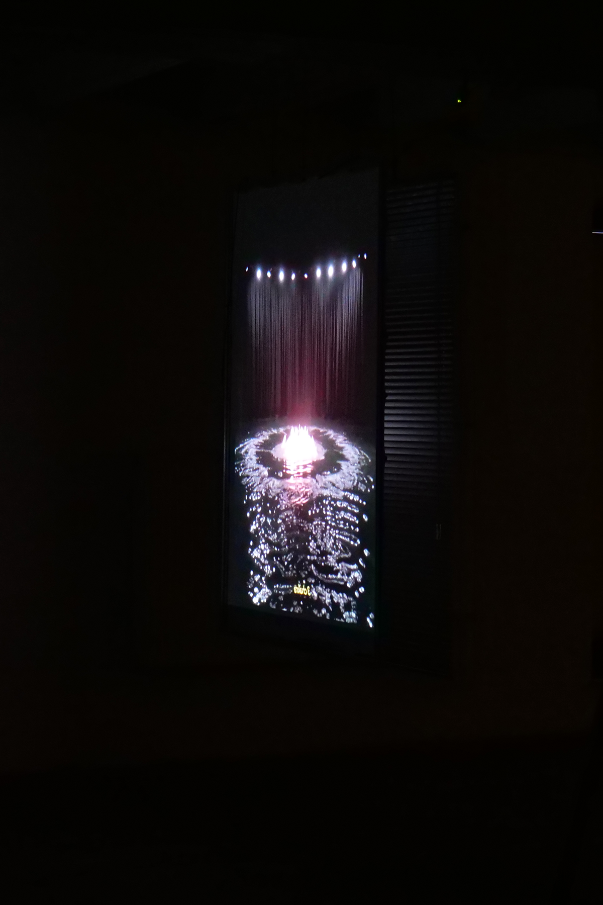
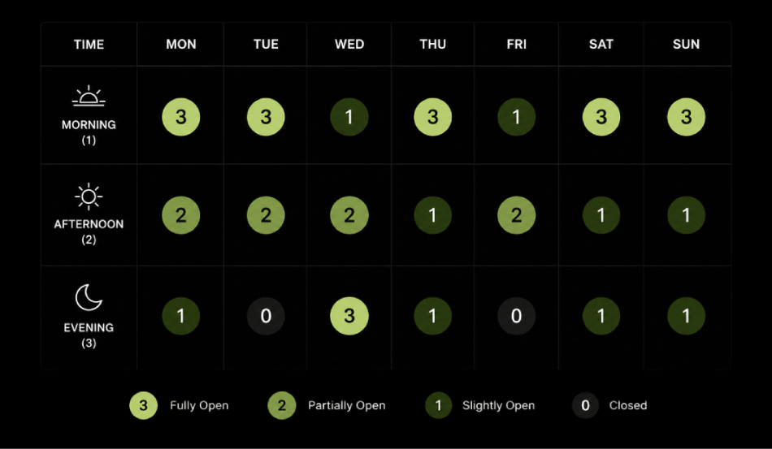
The video runs for seven minutes. The degree to which the blind opens and closes is determined by personal mood data recorded three times a day: morning, afternoon, and evening. Emotional states were documented on a scale from 0, completely closed, to 3, fully open. One week of data forms a single video cycle.
The spatial imagery in the video was generated based on atmospheres connected to the psychological characteristics of the seven chakras. The work visualizes intermittent moments when consciousness becomes clear — intervals of awareness.
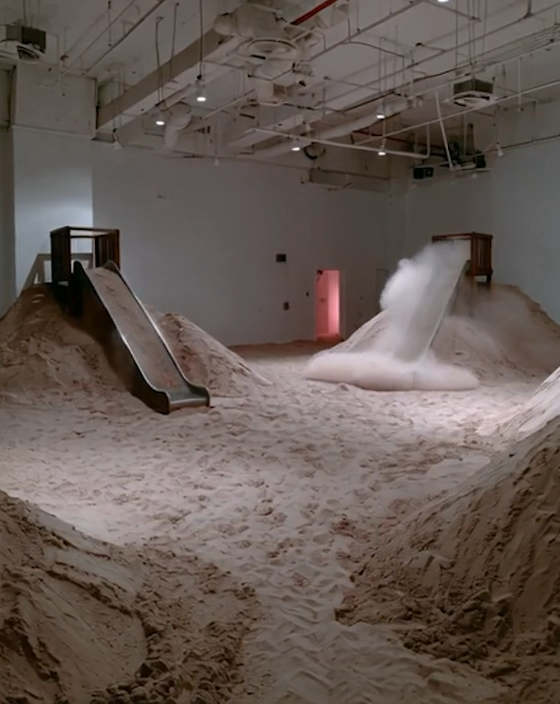
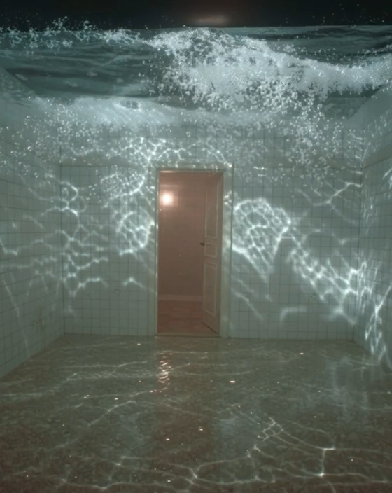
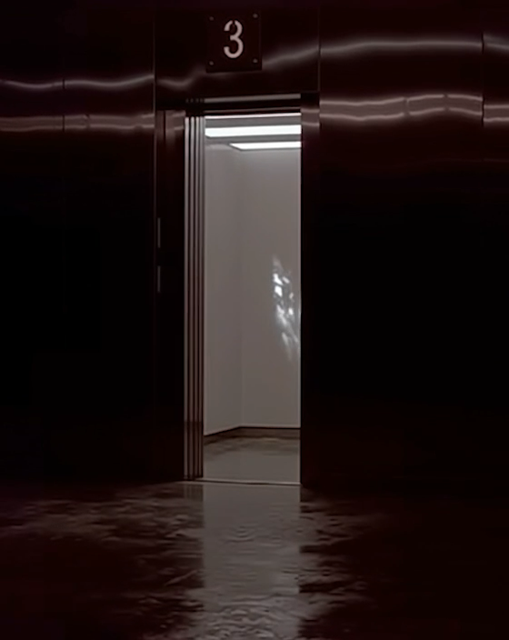
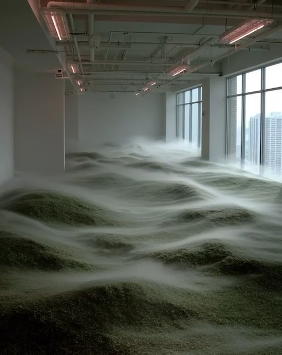
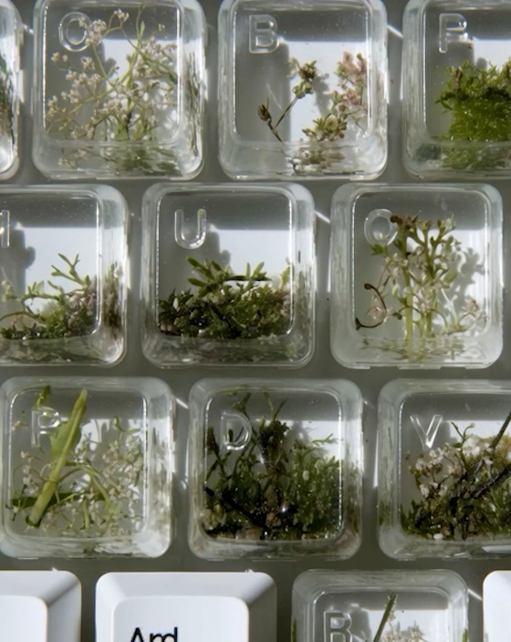
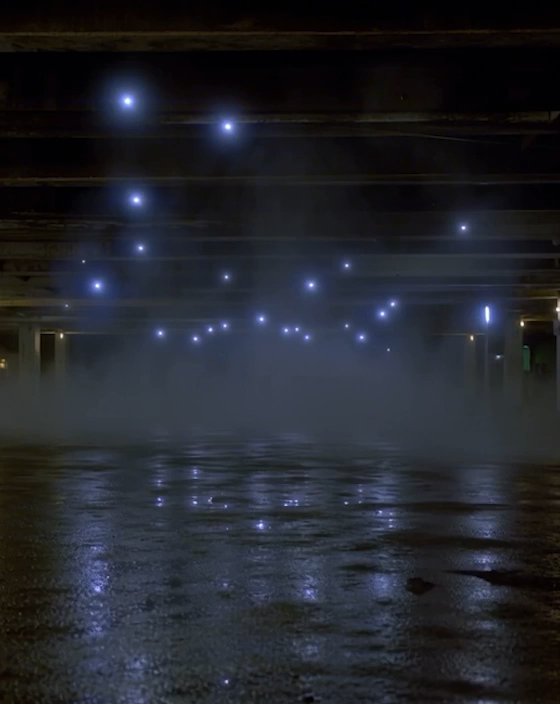
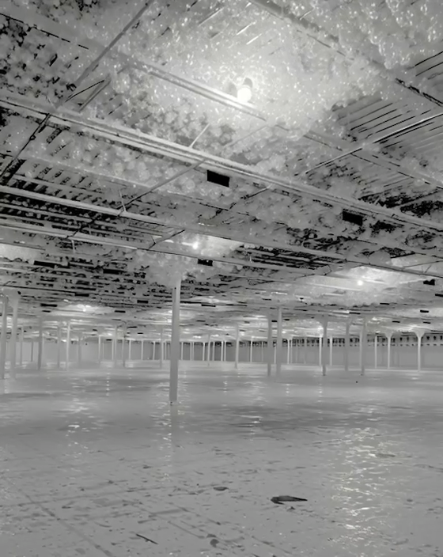
The poster extends the installation concept into a visual identity, using layered spatial imagery and the language of opening, closing, and awareness.
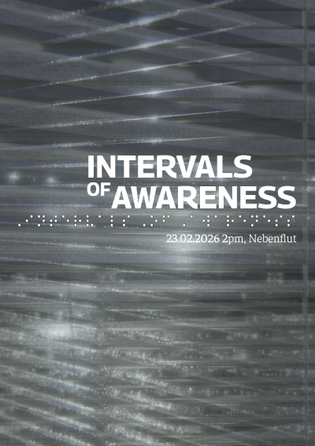
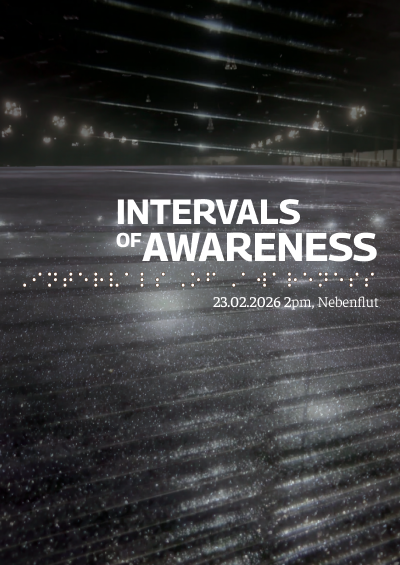